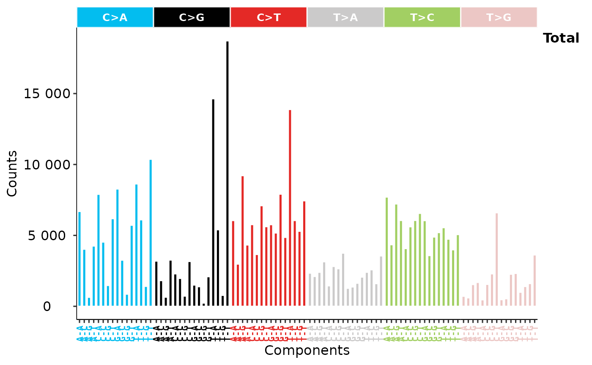

Show Alteration Catalogue Profile
result from sig_tally or a matrix with row representing components (motifs) and column representing samples
signature type for plotting, now supports 'copynumber', 'SBS', 'DBS', 'ID' and 'RS' (genome rearrangement signature).
method for copy number feature classification in sig_tally, can be one of "Wang" ("W"), "S".
normalize method.
plot style, one of 'default' and 'cosmic'.
default is NULL, show sum of all samples in one row.
If not NULL, show specified samples.
set the sample names shown in plot.
x axis lab.
y axis lab.
other arguments passing to show_sig_profile.
a ggplot object
# \donttest{
data("simulated_catalogs")
p <- show_catalogue(simulated_catalogs$set1, style = "cosmic")
p

# }